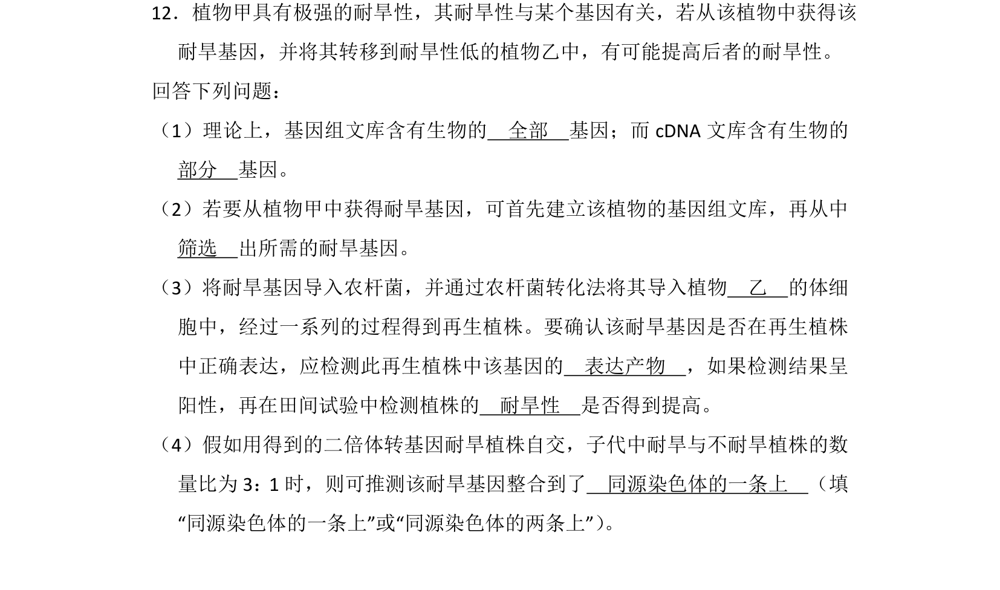
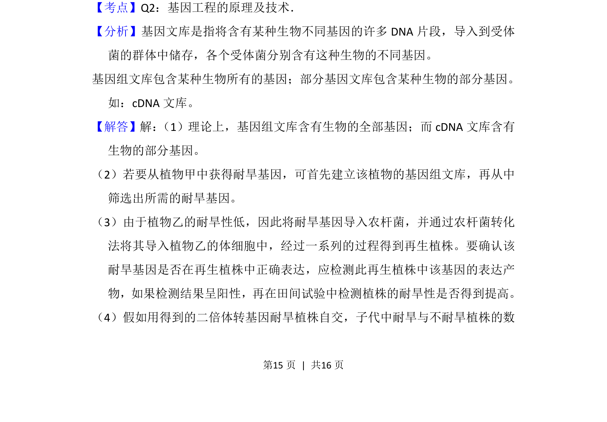
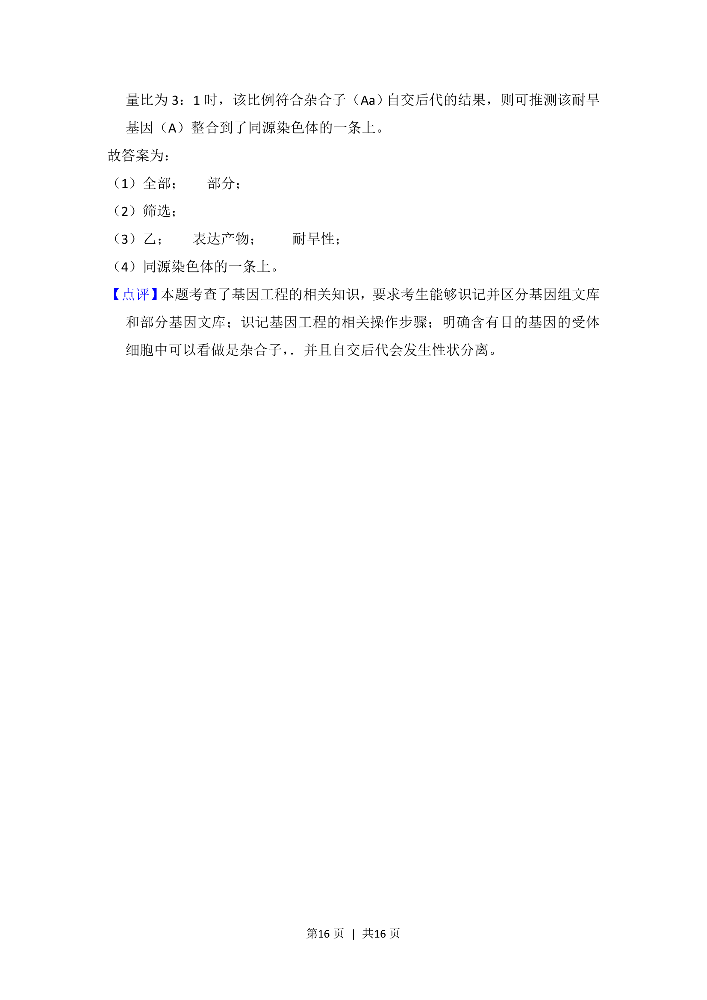

考点：基因工程 基因文库 农杆菌转化法 目的基因检测

本题主要考查基因工程中基因组文库与cDNA文库区别及目的基因的导入与检测。


📄 原 PDF 第 15 页：
素材/真题/吉林/2008-2024·（吉林）生物高考真题/2014年高考生物试卷（新课标Ⅱ）（解析卷）.pdf
12．植物甲具有极强的耐旱性，其耐旱性与某个基因有关，若从该植物中获得该 耐旱基因，并将其转移到耐旱性低的植物乙中，有可能提高后者的耐旱性。 回答下列问题： （1）理论上，基因组文库含有生物的 全部 基因；而cDNA文库含有生物的 部分 基因。 （2）若要从植物甲中获得耐旱基因，可首先建立该植物的基因组文库，再从中 筛选 出所需的耐旱基因。 （3）将耐旱基因导入农杆菌，并通过农杆菌转化法将其导入植物 乙 的体细 胞中，经过一系列的过程得到再生植株。要确认该耐旱基因是否在再生植株 中正确表达，应检测此再生植株中该基因的 表达产物 ，如果检测结果呈 阳性，再在田间试验中检测植株的 耐旱性 是否得到提高。 （4）假如用得到的二倍体转基因耐旱植株自交，子代中耐旱与不耐旱植株的数 量比为3：1时，则可推测该耐旱基因整合到了 同源染色体的一条上 （填 “同源染色体的一条上”或“同源染色体的两条上”） 。
【考点】Q2：基因工程的原理及技术．菁优网版权所有 【分析】基因文库是指将含有某种生物不同基因的许多DNA片段，导入到受体 菌的群体中储存，各个受体菌分别含有这种生物的不同基因。 基因组文库包含某种生物所有的基因；部分基因文库包含某种生物的部分基因。 如：cDNA文库。 【解答】解： （1）理论上，基因组文库含有生物的全部基因；而cDNA文库含有 生物的部分基因。 （2）若要从植物甲中获得耐旱基因，可首先建立该植物的基因组文库，再从中 筛选出所需的耐旱基因。 （3）由于植物乙的耐旱性低，因此将耐旱基因导入农杆菌，并通过农杆菌转化 法将其导入植物乙的体细胞中，经过一系列的过程得到再生植株。要确认该 耐旱基因是否在再生植株中正确表达，应检测此再生植株中该基因的表达产 物，如果检测结果呈阳性，再在田间试验中检测植株的耐旱性是否得到提高。 （4）假如用得到的二倍体转基因耐旱植株自交，子代中耐旱与不耐旱植株的数